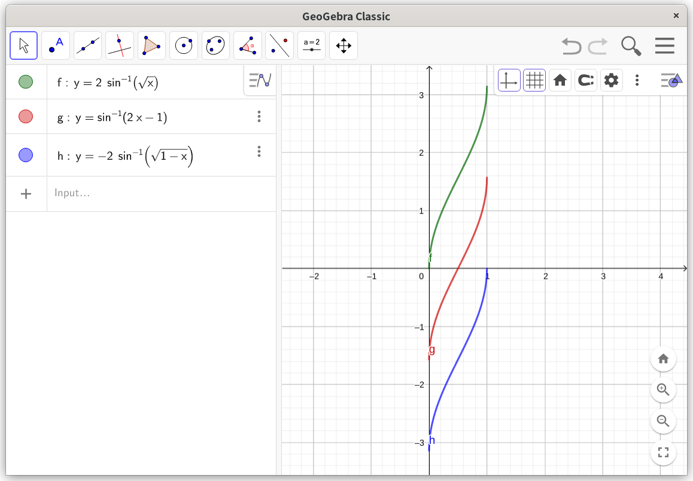

起因
求积分
∫x(1−x)dx
解法
解法一：答案的解法
=∫x(1−x)dx=2∫2x⋅1−(x)2dx∫1−(x)2d(x)=arcsinx+C
嗯，对，没有任何毛病，t=x的换元也很巧妙。
解法二：我起初的解法
==∫x−x2dx∫41−(x2−21)dx∫1−(2x−1)2d(2x−1)=arcsin(2x−1)+C
很暴力，直接配方，但是似乎也找不出毛病，积分结果和上面看起来完全不同。（因为一开始我画错了图，所以甚至以为不是同一个函数）。求导一下，发现导函数和答案得到的一样。
解法三：Wolfram Alpha的解法
===∫1−x2dx∫41−(21−x2)dx−2∫1−(1−x)2d(1−x)−2arcsin1−x+C
思路诡异，但是没毛病，也许这就是机器和人的差别吧。可是凭什么说这个函数和前面两个函数是一样的？虽说求导结果一样。
函数图像
求导结果一样就意味着函数图像应该形状相同。其实也确实是相同的，用GeoGebra画出来的图如下。

ps. 一开始我画错图了，导致我一直被图误导
证明
关于答案和wolframalpha的结果，使用对称性可破。
关于我的结果和答案，则需要使用半角公式。也就是证明2arcsinx−arcsin(2x−1)=C
证明：
首先，设
y1=2arcsinxy2=arcsin(2x−1)
那么有
x=sin22y1=21+siny2
另有
sin22y1=21−cosy1
故
1−cosy1=1+siny2⇔siny2=−cosy1=sin(y1+2π+2kπ)
所以
y2=y1+(4k+1)2π
证毕。对于这个情况，k=−1，也就是
$$
$$
总结
不仅仅涉及三角函数的积分可能没有所谓”最简“的结果，涉及反三角函数的积分可能也没有”最简“的结果，但正确结果之间肯定是相互等价的，这点大可放心。
三角函数的半角公式应用到反三角函数中，可以得到一波稀奇古怪的公式。
arcsin(2x2−1)=2arcsinx−2π